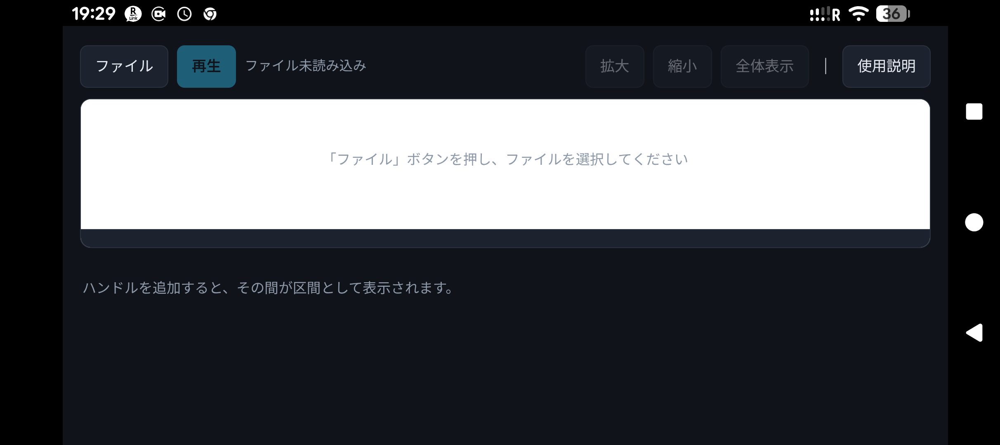
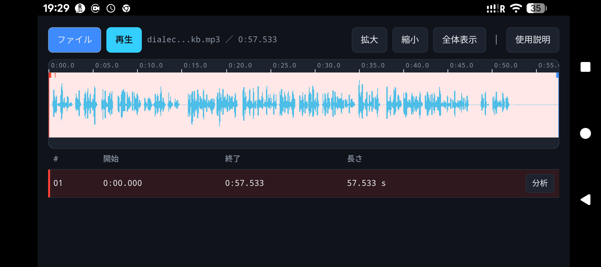
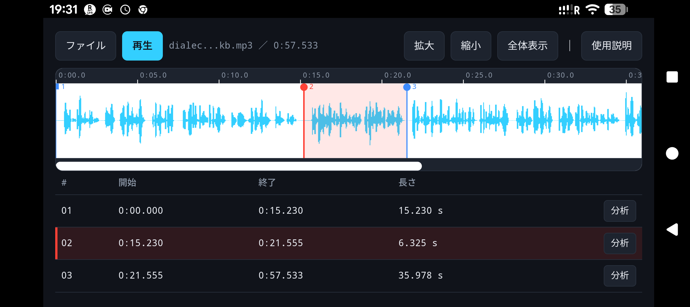
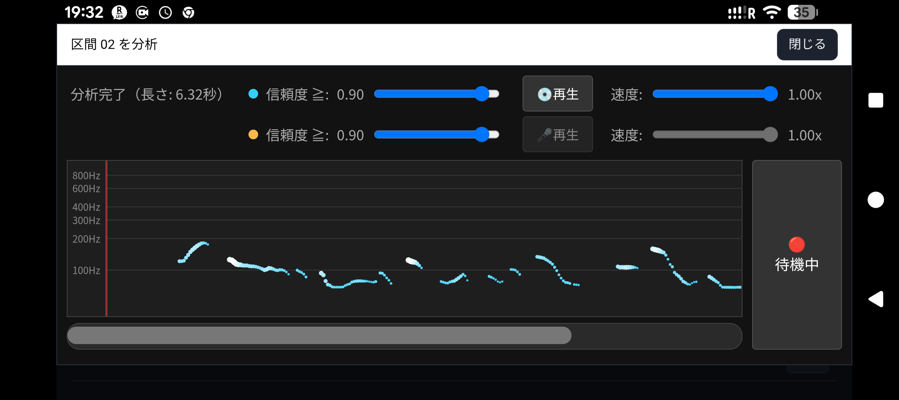

このウェブアプリは、英語のイントネーション学習用として開発したものです（もっとも英語に限らず、中国語の四声や日本語の方言、各種言語の練習にも使えるはずです）。
大まかな使い方は以下のとおりです。
https://mmurak.github.io/speechLab/intonationCoachS.html

スマートフォン版のChromeを使用している場合
スマートフォン版のChromeを使用しているのであれば、この段階で「ホーム画面に追加」メニューから「インストール」を選択してインストールアプリとしておくと、URLバーが表示されなくなり、画面を有効に利用できるようになります（ホーム画面上には以下のようなアイコンが表示されるはずです）。
アイコン
| 項目 | 説明 |
|---|---|
| ［ファイル］ボタン | このボタンを押さないと全ては始まりません。押すとダイアログボックスが表示されるので、開きたい音声ファイルを選択します。その結果、図2のようなオシログラム波形が表示されます。縦軸は振幅、横軸は時間です。 |
| ［再生］ボタン | このボタンを押すと、波形上の赤い縦線（ハンドル）からその直後にある青い縦線までが再生されます。なお、もう一度このボタンを押すと再生が停止します。 |
| ［拡大］ボタン | このボタンを押すと波形が拡大されます（つまり解像度が上がり発話の間隔を指定しやすくなります）。 |
| ［縮小］ボタン | このボタンを押すと波形が縮小されます（つまり一画面内に表示される領域情報が多くなります）。 |
| ［全体表示］ボタン | このボタンを押すと波形全体が表示されます（つまり一画面内に表示される領域情報が最も多くなります）。 |
| ［使用説明］ボタン | このドキュメント（https://mmurak.github.io/speechLab/intonationCoachS/help.html）が表示されます。 |


イントネーションの分析および練習をする場合、区間リストの対象領域行の右端にある［分析］ボタンを押します。すると図4のような画面が表示されます。なお、分析対象領域は30秒未満になるようにしてください。

| 項目 | 説明 |
|---|---|
| ［閉じる］ボタン | 波形領域設定画面に戻るためのボタンです。 |
| ［信頼度］スライダー | 信頼度とは、チャートに描画されているそれぞれの点が有声区間内にあり、そのピッチが50セント以内の精度になっているかどうかを0〜1.0の指標で表したものです。青はモデル音声の信頼度であり、オレンジはマイク音声に対するものです。既定値は0.9ですが、音源に応じて下げた方が下降音の感度が上がる傾向にあります（下げすぎると誤検知された点が表示されるようになります）。なお「信頼度」の文字をクリック（またはタップ）すると既定値の0.9に戻ります。 |
| ［💿再生］ボタン | この領域の音声が再生されます。もう一度押すと再生が停止し、さらにもう一度押すと続きから再生されます（このボタンを長押しすると、領域の最初から再生が始まります）。 |
| ［🎤再生］ボタン | 録音した音声が再生されます。もう一度押すと再生が停止し、さらにもう一度押すと続きから再生されます（このボタンを長押しすると、領域の最初から再生が始まります）。 |
| ［速度］スライダー | 音声のピッチを保ったまま、再生速度を0.2〜1.0の範囲で調整できます。 |
| ［🔴待機中］ボタン | このボタンを押すと、マイクを使った録音が可能です。録音を終了するにはもう一度このボタンを押します。 |
縦軸は音の高さで横軸は時間です。モデル音源は水色で表示され、音が強いところは白っぽく変化していきます。マイクからの音声はオレンジ色で表示され、こちらも音が強いところは白っぽく変化していきます。
チャート領域をドラッグすると、マイク録音結果のみを左右にスライドさせることができるので、モデル音源のチャートと重なるかどうかでイントネーションの正しさを確認できます。また、チャートの下にあるスクロールバーをドラッグすることで、モデル音源と録音音声のチャートを同時に左右にスライドさせることができます。
録音音声からそのピッチ（＝声帯の基本振動周波数、平たく言えば地声の高さ）を求めるというのはコンピューターにとって難問であり、半世紀以上に渡り、そして今でも研究者が知恵を振り絞り続けている問題です。このアプリが使用しているSwiftF0というアルゴリズムは、2026年時点において、精度と実行速度を両立した最高峰とも言えるものですが、実際に使ってみると、信頼度の規定値が0.90というのは少し高すぎるように感じています。このため、有声区間であるにもかかわらずプロットされていないという場合、信頼度スライダーを少し下げてみるのがよいと感じています（下げすぎるとノイズだらけになります）。
このウェブアプリはLars Nieradzik氏のSwiftF0とMicrosoftのONNX Runtime Web（いずれもMIT License）を使用しています。
音声はブラウザ内でのみ処理され、外部へは送信されません。
開発にはClaudeの力も借りています。